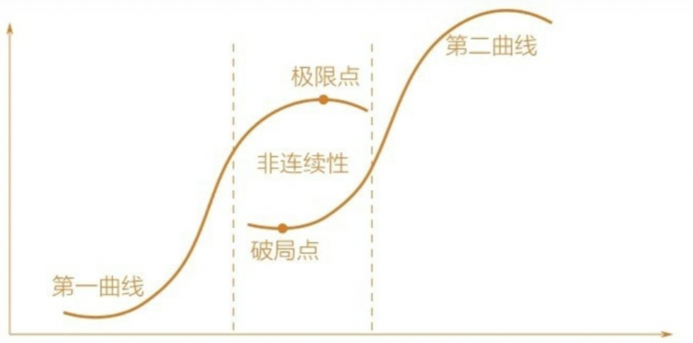
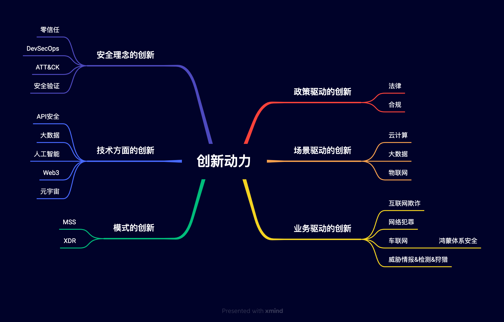
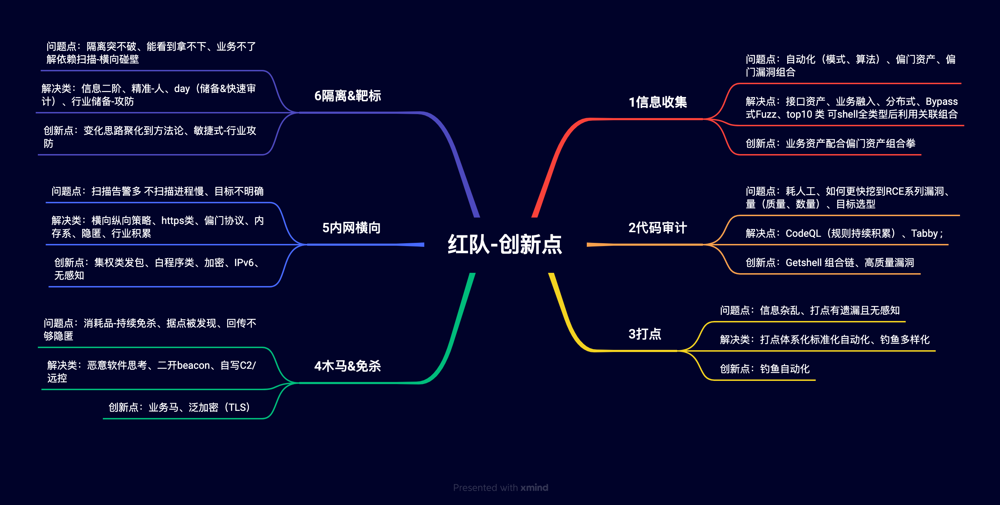
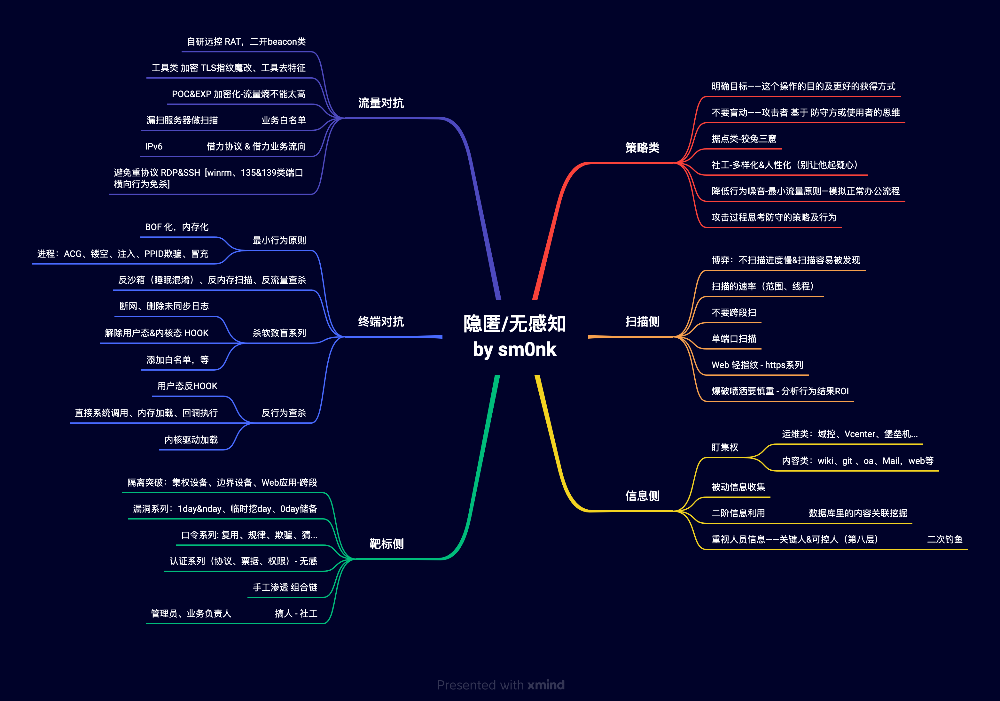
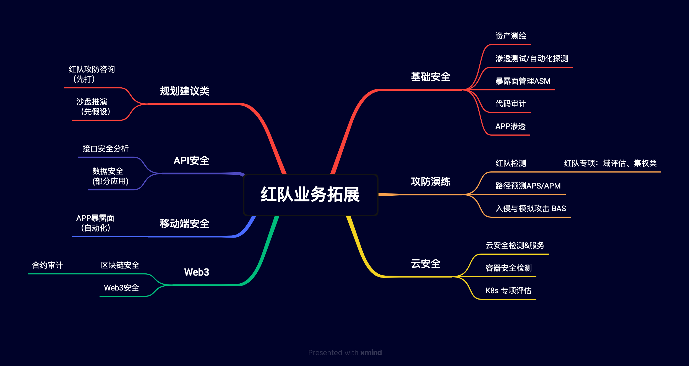

<!DOCTYPE html>
<html>
<head><meta name="generator" content="Hexo 3.8.0">
  <meta charset="utf-8">
  
  <title>攻防技术创新探究 | sm0nk&#39;s blog</title>

  <!-- keywords -->
  

  <meta name="viewport" content="width=device-width, initial-scale=1, maximum-scale=1">
  <meta name="description" content="1月7日 在ADconf 分享了 攻防创新相关的议题。在公众号归档下。 总体分析和归纳不一定准确，欢迎各位大佬指正。官微链接 整体内容，主要是那几个脑图。文字为精简版。">
<meta name="keywords" content="创新">
<meta property="og:type" content="article">
<meta property="og:title" content="攻防技术创新探究">
<meta property="og:url" content="http://yoursite.com/2023/01/10/攻防技术创新探究/index.html">
<meta property="og:site_name" content="sm0nk&#39;s blog">
<meta property="og:description" content="1月7日 在ADconf 分享了 攻防创新相关的议题。在公众号归档下。 总体分析和归纳不一定准确，欢迎各位大佬指正。官微链接 整体内容，主要是那几个脑图。文字为精简版。">
<meta property="og:locale" content="default">
<meta property="og:image" content="http://yoursite.com/2023/01/10/攻防技术创新探究/000.png">
<meta property="og:image" content="http://yoursite.com/2023/01/10/攻防技术创新探究/111.png">
<meta property="og:image" content="http://yoursite.com/2023/01/10/攻防技术创新探究/chuangxindongli.png">
<meta property="og:image" content="http://yoursite.com/2023/01/10/攻防技术创新探究/hongduichuangxin.png">
<meta property="og:image" content="http://yoursite.com/2023/01/10/攻防技术创新探究/wuganzhigongfang.png">
<meta property="og:image" content="http://yoursite.com/2023/01/10/攻防技术创新探究/hongduiyewutuozhan.png">
<meta property="og:updated_time" content="2023-01-10T06:40:38.727Z">
<meta name="twitter:card" content="summary">
<meta name="twitter:title" content="攻防技术创新探究">
<meta name="twitter:description" content="1月7日 在ADconf 分享了 攻防创新相关的议题。在公众号归档下。 总体分析和归纳不一定准确，欢迎各位大佬指正。官微链接 整体内容，主要是那几个脑图。文字为精简版。">
<meta name="twitter:image" content="http://yoursite.com/2023/01/10/攻防技术创新探究/000.png">
  
    <link rel="alternative" href="/atom.xml" title="sm0nk&#39;s blog" type="application/atom+xml">
  
  
    <link rel="icon" href="http://p6.sinaimg.cn/3607464725/180/71341468803657">
  
  <link rel="stylesheet" href="/css/style.css">
  
  

  <script src="//cdn.bootcss.com/require.js/2.3.2/require.min.js"></script>
  <script src="//cdn.bootcss.com/jquery/3.1.1/jquery.min.js"></script>

  
</head></html>
<body>
  <div id="container">
    <div id="particles-js"></div>
    <div class="left-col">
    <div class="overlay"></div>
<div class="intrude-less">
	<header id="header" class="inner">
		<a href="/" class="profilepic">
			
			
			
		</a>

		<hgroup>
		  <h1 class="header-author"><a href="/">sm0nk</a></h1>
		</hgroup>

		

		
			<div class="switch-btn">
				<div class="icon">
					<div class="icon-ctn">
						<div class="icon-wrap icon-house" data-idx="0">
							<div class="birdhouse"></div>
							<div class="birdhouse_holes"></div>
						</div>
						<div class="icon-wrap icon-ribbon hide" data-idx="1">
							<div class="ribbon"></div>
						</div>
						
						
					</div>
					
				</div>
				<div class="tips-box hide">
					<div class="tips-arrow"></div>
					<ul class="tips-inner">
						<li>菜单</li>
						<li>标签</li>
						
						
					</ul>
				</div>
			</div>
		

		<div class="switch-area">
			<div class="switch-wrap">
				<section class="switch-part switch-part1">
					<nav class="header-menu">
						<ul>
						
							<li><a href="/categories/攻防渗透/">攻防渗透</a></li>
				        
							<li><a href="/categories/编程之道/">编程之道</a></li>
				        
							<li><a href="/categories/归纳总结/">归纳总结</a></li>
				        
							<li><a href="/categories/认知独省/">认知独省</a></li>
				        
						</ul>
					</nav>
					<nav class="header-nav">
						<div class="social">
							
								<a class="mail" target="_blank" href="mailto:sm0nk@qq.com" title="mail">mail</a>
					        
								<a class="weibo" target="_blank" href="http://weibo.com/shellr00t" title="weibo">weibo</a>
					        
						</div>
					</nav>
				</section>
				
				
				<section class="switch-part switch-part2">
					<div class="widget tagcloud" id="js-tagcloud">
						<a href="/tags/CTF/" style="font-size: 10px;">CTF</a> <a href="/tags/SQL注入/" style="font-size: 10px;">SQL注入</a> <a href="/tags/blog/" style="font-size: 10px;">blog</a> <a href="/tags/pentest/" style="font-size: 10px;">pentest</a> <a href="/tags/python/" style="font-size: 20px;">python</a> <a href="/tags/seleinum/" style="font-size: 10px;">seleinum</a> <a href="/tags/struts2/" style="font-size: 10px;">struts2</a> <a href="/tags/业务逻辑/" style="font-size: 10px;">业务逻辑</a> <a href="/tags/代理转发/" style="font-size: 10px;">代理转发</a> <a href="/tags/创新/" style="font-size: 10px;">创新</a> <a href="/tags/工控安全/" style="font-size: 10px;">工控安全</a> <a href="/tags/应急/" style="font-size: 20px;">应急</a> <a href="/tags/接口安全/" style="font-size: 10px;">接口安全</a> <a href="/tags/渗透/" style="font-size: 10px;">渗透</a> <a href="/tags/爆破/" style="font-size: 10px;">爆破</a> <a href="/tags/语言安全/" style="font-size: 10px;">语言安全</a> <a href="/tags/远程下载/" style="font-size: 10px;">远程下载</a>
					</div>
				</section>
				
				
				

				
			</div>
		</div>
	</header>				
</div>
    </div>
    <div class="mid-col">
      <nav id="mobile-nav">
  	<div class="overlay">
  		<div class="slider-trigger"></div>
  		<h1 class="header-author js-mobile-header hide">sm0nk</h1>
  	</div>
	<div class="intrude-less">
		<header id="header" class="inner">
			<div class="profilepic">
				
			</div>
			<hgroup>
			  <h1 class="header-author">sm0nk</h1>
			</hgroup>
			
			<nav class="header-menu">
				<ul>
				
					<li><a href="/categories/攻防渗透/">攻防渗透</a></li>
		        
					<li><a href="/categories/编程之道/">编程之道</a></li>
		        
					<li><a href="/categories/归纳总结/">归纳总结</a></li>
		        
					<li><a href="/categories/认知独省/">认知独省</a></li>
		        
		        <div class="clearfix"></div>
				</ul>
			</nav>
			<nav class="header-nav">
				<div class="social">
					
						<a class="mail" target="_blank" href="mailto:sm0nk@qq.com" title="mail">mail</a>
			        
						<a class="weibo" target="_blank" href="http://weibo.com/shellr00t" title="weibo">weibo</a>
			        
				</div>
			</nav>
		</header>				
	</div>
</nav>
      <div class="body-wrap"><article id="post-攻防技术创新探究" class="article article-type-post" itemscope itemprop="blogPost">
  
    <div class="article-meta">
      <a href="/2023/01/10/攻防技术创新探究/" class="article-date">
  	<time datetime="2023-01-10T00:00:00.000Z" itemprop="datePublished">2023-01-10</time>
</a>
    </div>
  
  <div class="article-inner">
    
      <input type="hidden" class="isFancy">
    
    
      <header class="article-header">
        
  
    <h1 class="article-title" itemprop="name">
      攻防技术创新探究
      
    </h1>
  

      </header>
      
      <div class="article-info article-info-post">
        
	<div class="article-tag tagcloud">
		<ul class="article-tag-list"><li class="article-tag-list-item"><a class="article-tag-list-link" href="/tags/创新/">创新</a></li></ul>
	</div>

        
	<div class="article-category tagcloud">
	<a class="article-category-link" href="/categories/认知独省/">认知独省</a>
	</div>


        
        <div class="clearfix"></div>
      </div>
      
    
    <div class="article-entry" itemprop="articleBody">
      
        <p>1月7日 在<a href="https://www.netstarsec.com/adconf/" target="_blank" rel="noopener">ADconf</a> 分享了 攻防创新相关的议题。在公众号归档下。</p>
<p>总体分析和归纳不一定准确，欢迎各位大佬指正。<a href="https://mp.weixin.qq.com/s/3NRwMqc-4mxmpGwVN0caKw" target="_blank" rel="noopener">官微链接</a></p>
<p>整体内容，主要是那几个<font color="red"><strong>脑图</strong></font>。文字为精简版。</p>
<p></p>
<a id="more"></a>
<p><br></p>
<!-- toc -->
<ul>
<li><a href="#为什么讲创新">为什么讲创新</a></li>
<li><a href="#攻防场景创新">攻防场景创新</a></li>
<li><a href="#红队实战创新">红队实战创新</a></li>
<li><a href="#攻防业务创新">攻防业务创新</a></li>
</ul>
<!-- tocstop -->
<p><br></p>
<h1><span id="为什么讲创新">为什么讲创新</span></h1><p>在技术发展的过程中，总会遇到极限出现的那一刻。一项技术在遭遇极限后只能就此停步。令人沮丧的是，极限点是不可避免的。</p>
<p>——《技术的本质》</p>
<p><strong>发展瓶颈点分析：</strong></p>
<ol>
<li>个人瓶颈：技术瓶颈点、发展瓶颈点、高阶技术升华</li>
<li>团队瓶颈：赛道的选择、输出价值、技术认可</li>
<li>公司瓶颈：客户需求、商业价值、拔高能力</li>
</ol>
<p><strong>创新的意义：</strong></p>
<ol>
<li>解决瓶颈；</li>
<li>实现价值&amp;创造新价值</li>
</ol>
<p><strong>关于创新三大误解：</strong></p>
<ol>
<li>创新就是发明创造；</li>
<li>创新是天才们的事情；</li>
<li>创新是灵光一现，孤立的，很难被学习和复制。</li>
</ol>
<p></p>
<h1><span id="攻防场景创新">攻防场景创新</span></h1><p>网络安全的创新动力：政策、场景、业务、理念、技术、模式…</p>
<p></p>
<p>​    安全是相对万金油的存在，只要场景应用够大，这个场景的安全就会更成体系化，例如云计算的普及对应云安全就很典型；零信任全方面应用后 零信任本身的安全也会比较有价值；车联网的赛道场景强化，进一步增强了车联网安全的应用，甚至基于5G 鸿蒙体系的安全会更加普遍。</p>
<font color="red"><strong>整体以攻防技术为内核、赛道场景为驱动（业务逻辑辅助）、应用场景越广泛意味着这个攻防赛道价值越高。</strong></font>


<h1><span id="红队实战创新">红队实战创新</span></h1><p><strong>实战几个问题，算不算创新？</strong></p>
<ol>
<li>实战攻防中，在内外网信息收集上花费了多少时间？还有没有提升效率的空间？</li>
<li>漏洞挖掘-0day储备，在储备的质量和数量，除了投入更多的研究员，还有哪些方法？</li>
<li>社工钓鱼，除了常规的邮件、社交、功能等形式 还有哪些可以提高准度和效率的点？</li>
<li>如何让自己的木马免杀持久性更好？而不是成为一个消耗品？（APT的马子）</li>
<li>内网过程，除了扫描还有没有更精准快速的扩大战果的手段？</li>
<li>破隔离、拿靶标？如何更高提升效率？</li>
<li>二进制在攻防实战有哪些更好的应用？</li>
</ol>
<p><strong>红队创新点</strong></p>
<p></p>
<p>红队创新点梳理：</p>
<ol>
<li>信息收集，基于业务资产的偏门资产组合拳，例如接口资产自动化、业务虚拟目录+Fuzz；</li>
<li>代码审计，利用多类型漏洞组合拳组合Getshell链；</li>
<li>打点，钓鱼自动化+人性化闭环；</li>
<li>木马&amp;免杀，基于业务流向的泛木马、基于自定义加密算法的魔改；</li>
<li>内网横向，基于集权的维权与发包、专有协议、业务白名单、基于协议的认证突破；</li>
<li>隔离突破&amp;靶标，基于集权&amp;边界设备的自动化精准发掘、认证突破</li>
</ol>
<p><strong>红队vsAPT组织 重点差异-隐匿</strong></p>
<p></p>
<p><strong>重点体现下靶标侧：</strong></p>
<ol>
<li>隔离突破：重点关注集权设备（AD k8s vcenter …）、边界设备(VPN、FW、SW)、Web应用-跨段（https 隐匿效果更佳）</li>
<li>漏洞系列：1day&amp;nday（相对比感知明显）、0day储备、临时挖day（基于临时源码&amp;闭源代码），总体来看漏洞打过后尤其RCE效果在端侧还是有动静被监测。（也要看防守人员是否针对告警做处置，例如佯装攻击批量告警后的专项攻击）</li>
<li>口令系列：密码提取&amp;复用、规律提取、密码&amp;验证码欺骗、基于社工的猜测推理</li>
<li>认证系列：基于协议、票据、认证类的突破。相对无感，毕竟都是正常行为，管理员也是这个业务流量。</li>
<li>手工渗透，组合拳。（top10类组合、 web&amp;系统&amp;组件的渗透组合）</li>
<li>基于社会工程（搞人），二次钓鱼&amp;精准钓鱼，运维管理、业务管理等</li>
</ol>
<h1><span id="攻防业务创新">攻防业务创新</span></h1><p><strong>红队目标（初衷）回顾：</strong></p>
<p><strong>红队的业务目标</strong>：帮助企业安全建设；专治嘴硬（不信自己能被攻破，安全建设有效性验证）</p>
<p><strong>红队的技术目标</strong>：沉淀行业攻防经验（金融、能源、互联网…），类似老中医望闻问切，然后对症下药。</p>
<p></p>
<p>赛道领域非常的多（据不完全统计，<a href="https://mp.weixin.qq.com/s/vnCdiOB1tsvkdgz5-5Z8ug" target="_blank" rel="noopener">2022年投资的细分领域20多个</a>： 工控安全、隐私计算、开发安全、零信任、安全运营、物联网安全、区块链、公共安全、智能网联汽车、身份安全、大数据安全、云安全、密码、API安全、渗透测试、软件安全、安全合规、安全验证、威胁检测、威胁情报、攻击面管理、网络靶场、网络空间测绘、网络安全芯片、异构大数据、IP数据库等），但具体红队攻防赛道哪些可以更好的落地？</p>
<ol>
<li><p>攻防演练类，目前红队检测服务相对比较为成熟，还可以拓展红队专项评估，例如域安全评估、集权类专项评估（k8s、vcenter…）</p>
</li>
<li><p>入侵与模拟攻击BAS</p>
</li>
<li><p>云安全专项检测，本身对红队渗透有帮助，且可单独形成服务</p>
</li>
<li><p>红队中，移动端的暴露面自动化探测</p>
</li>
<li><p>红队中，借用api进行数据权限的获取，借助业务资产&amp;表单构造寻找偏门资产，助力信息收集的最大化，实现ASM类的增值</p>
</li>
<li><p>规划建议类，红队攻防咨询、沙盘推演；</p>
<ol>
<li>攻防咨询，基于红队检测结果，进行根因挖掘形成有效性检测建议（咨询类公司不一定好做，因为没有实际做，红队类没做总归是概念，做了就能得到验证）</li>
<li>沙盘推演，企业类不一定好组织，需要的资源相对较多。但的确能够发掘更广泛的风险及影响，进而佐证价值点</li>
<li>攻防咨询先执行了红队，基于结果来建议并推动；沙盘要假设成分，逻辑可行，不一定真打，重在证明影响和危害。</li>
</ol>
</li>
</ol>
<p><br><br><br></p>
<p>文中的脑图文件</p>
<p>链接: <a href="https://pan.baidu.com/s/1Cl1o37X6w1RgtNScV1Y0Iw" target="_blank" rel="noopener">https://pan.baidu.com/s/1Cl1o37X6w1RgtNScV1Y0Iw</a> 提取码: 2333</p>

      
    </div>
    
  </div>
  
    
<nav id="article-nav">
  
  
    <a href="/2021/07/27/红队vs编程语言/" id="article-nav-older" class="article-nav-link-wrap">
      <div class="article-nav-title">红队vs编程语言</div>
      <strong class="article-nav-caption">&gt;</strong>
    </a>
  
</nav>

  
</article>


</div>
      <footer id="footer">
  <div class="outer">
    <div id="footer-info">
      <div class="footer-left">
        &copy; 2023 sm0nk
      </div>
        <div class="footer-right">
          <a href="http://hexo.io/" target="_blank">Hexo</a>  Theme <a href="https://github.com/smackgg/hexo-theme-smackdown" target="_blank">Smackdown</a>
        </div>
    </div>
  </div>
</footer>
    </div>
    
  <link rel="stylesheet" href="/fancybox/jquery.fancybox.css">


<script>
	var yiliaConfig = {
		fancybox: true,
		mathjax: true,
		animate: true,
		isHome: false,
		isPost: true,
		isArchive: false,
		isTag: false,
		isCategory: false,
		open_in_new: true
	}
</script>
<script src="/js/main.js"></script>


<script type="text/x-mathjax-config">
MathJax.Hub.Config({
    tex2jax: {
        inlineMath: [ ['$','$'], ["\\(","\\)"]  ],
        processEscapes: true,
        skipTags: ['script', 'noscript', 'style', 'textarea', 'pre', 'code']
    }
});

MathJax.Hub.Queue(function() {
    var all = MathJax.Hub.getAllJax(), i;
    for(i=0; i < all.length; i += 1) {
        all[i].SourceElement().parentNode.className += ' has-jax';                 
    }       
});
</script>

<script src="//cdn.bootcss.com/mathjax/2.7.0/MathJax.js"></script>


  </div>
</body>
</html>